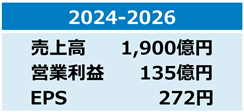
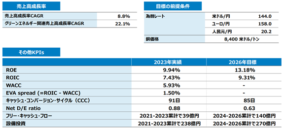
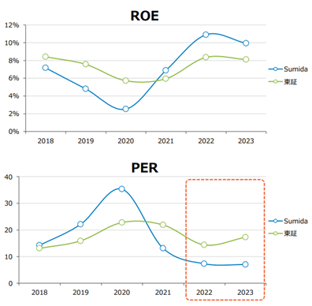
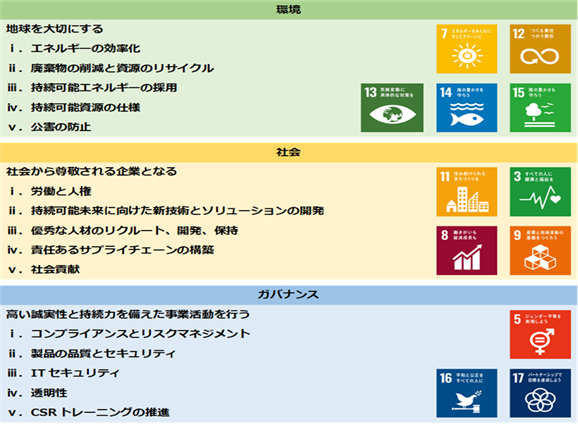
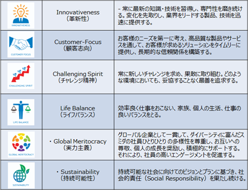
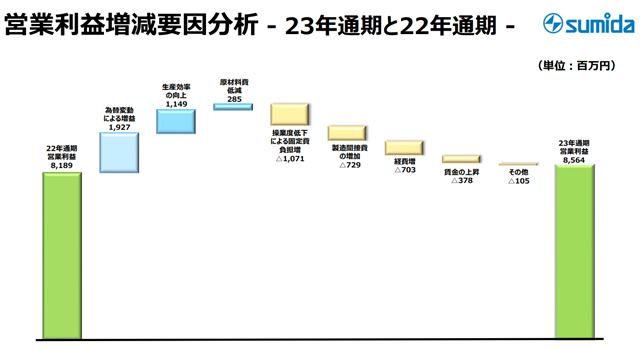
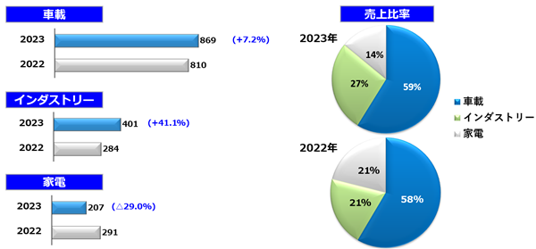
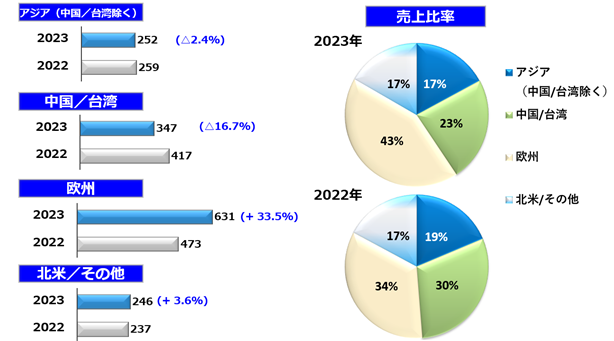
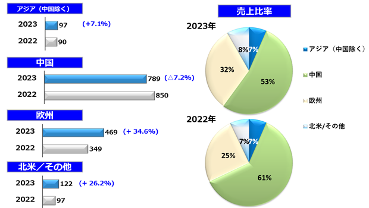

文中における将来に関する事項は、有価証券報告書提出日（2024年3月21日）現在において当社グループが判断したものです。
(1) 会社の経営の基本方針
技術と人の架け橋
当社グループのビジョンは、時代を超越した企業として、我々の想像力に富んだアイディアを実現し、世の中にパワーと勇気を与えるためのソリューションを提供する業界のリーダーとなることです。当社グループの使命は、お客様に、人々の生活の質を向上する、すなわち生活をより楽に、安全に、健康に、楽しくそして環境にやさしくするための製品や技術の開発を可能とするソリューションを提供することです。
(2) 経営環境及び対処すべき課題等
① 中期経営計画の推進
当社グループは、計画期間を3年間とする中期経営計画を策定しています。事業環境に応じて市場別基本方針及び重点課題を見定め、数値目標の達成に向けて事業活動に取り組んでいます。
a. 前中期経営計画（2021-2023年度）の振り返り
■市場別基本方針
・車載市場：
マーケットリーダーとなることを目指しxEVの設計・製造に最大限重点的に取り組みました。
・インダストリー市場：
再生可能エネルギー、代替エネルギー、脱炭素関連インフラ及び医療市場に取り組みました。
・家電市場：
価格競争力があり、十分な利益を確保できる新技術アプリケーションの開発に取り組みました。
■重点課題
《xEV市場での成長》
・本計画期間中の3年間に、xEV関連の売上高を年率40%で成長させ、2023年度に売上全体の20%以上とすることを目標に掲げました。取り組みの結果、xEV関連の売上高は年率54%で成長し、2023年度に売上高全体の19%となりました。
《地域、製造戦略》
・2021年末に北米子会社2社の合併を完了しました。
・ベトナム、クアンガイ第2及び第3工場の増築を完了し、量産を開始しました。
・青森工場を約1.5倍に拡張することを決定しました。2024年に量産を開始する予定です。
■数値目標
・本計画では当初、2023年度の売上収益1,080億円、営業利益70億円の数値目標を設定しました。
・事業環境の変化を踏まえ、2022年初頭に中期経営計画の目標数値を上方修正し、2023年度の売上収益1,270億円、営業利益75億円としました。2022年度の経営成績は、売上収益1,386億円、営業利益81億円となり、上方修正後の2023年度目標数値を1年前倒しで達成しました。
・2023年度の経営成績は、売上収益1,476億円、営業利益85億円となり、2年連続で過去最高の営業利益を更新しました。
b. 新中期経営計画（2024-2026年度）
■重点課題
《「脱炭素関連」市場での成長》
・前中期経営計画（2021-2023年度）で掲げたxEV関連からスコープを広げ、充電インフラ、太陽光発電、蓄電池等を含む用途群を「グリーンエネルギー関連」と定義し、年率22%の成長を目指します。そして、2026年度に当社グループ売上高全体の35%以上を「グリーンエネルギー関連」で占めることを目指します。
■市場別基本方針
・車載市場：
EV・ハイブリッド・FCV関連等、動力源を問わずビジネス機会を捉え、成長を目指します。
・インダストリー市場：
グリーンエネルギー、ファクトリーオートメーション・ロボット、医療機器、宇宙開発関連に注力し、成長を目指します。
・家電市場：
AI普及を機に積極的にビジネスを獲得し、現在の規模を確保しつつ収益率の向上を目指します。
■地域、製造戦略
・地産地消の体制づくりをさらに強化します。営業、開発、製造の3体制を各地域で完結することを通じて、お客様のニーズにより柔軟かつ迅速に対応します。このために、中国における生産能力の最適化、北米における研究開発能力の更なる増強、インドにおける新規案件の獲得及びベトナムでの生産能力の拡大を進めます。加えて、複数拠点での生産体制を確立し、地政学リスクに対応します。
・営業キャッシュフローの範囲内で前中期経営計画と同規模の設備投資を継続します。
・中国一辺倒のリスク回避とコスト削減を目指し、ASEAN地域でのサプライヤーを増やします。加えて、温室効果ガス削減を達成するため、最適なサプライヤーを選定します。
・生産ラインの自動化を継続して行うことで、賃金上昇を上回る生産性向上を実現します。
・DXを活用し、事業規模が大きくなっていく中でも人員増を抑制しつつ業務を遂行します。
■数値目標
・2026年度の売上収益1,900億円、営業利益135億円、1株当たり当期利益(EPS) 272円を目指します。
・投下資本利益率(ROIC) 9.31%、親会社所有者帰属持分当期利益率(ROE) 13.18%を目指します。
・3年間累計でフリー・キャッシュ・フロー140億円の創出を目指します。


■PBRの向上に向けた取組み
当連結会計年度末における当社グループのROEは9.94%、PERは約7倍であり、東証全上場企業の平均値と比較して特にPERに課題があると考えています。PER7倍の逆数は約14.2%となり、これは資本コストから期待成長率を差し引いた値と一致します。当社グループの株主資本コストが8.9%であるとき、期待成長率はマイナス5.3%となります。株主資本コストについては直近における無リスク金利や市場リスクプレミアムの高まりを反映している側面はありますが、なお当社グループ固有の課題もあると考えています。1つの仮説として、当社グループでは前連結会計年度及び当連結会計年度において2期連続で過去最高の営業利益を更新したものの、これらの営業利益水準に比べてフリー・キャッシュ・フローが見合っていない、又は安定性に課題があると株式市場から評価されているのではないかと考えています。また、期待成長率が大幅なマイナスと評価されていることは、当社グループのIR活動に改善の余地があることを示唆していると考えています。そこで、PBRの向上に向けた取り組みとして以下の施策を実行することを考えています。
・株主還元の強化
一般的に、株主還元の手法として自社株式の購入又は増配があります。当社グループでは、当連結会計年度において新株発行により成長投資の資金を調達した直後であることを踏まえると、現実的に取り得る選択肢として増配が考えられます。当社グループでは連結配当性向を従来25～30%としてまいりましたが、東証上場企業の中央値30%と比較して必ずしも魅力的ではない水準でした。当社グループ事業への成長投資が必要な段階にありながらも、他社に劣後しない最低限の水準として、連結配当性向の目安を30％以上に引き上げることとしました。
・IR 活動の強化、開示の充実
従来より機関投資家向けの個別面談を実施してまいりましたが、これを継続・強化します。また、個人投資家向けのIR活動を新たに開始します。IR活動を通じて当社グループの事業や戦略についてより効果的にお伝えすることができるように、グリーンエネルギー関連売上等の当社グループの注力領域に関する情報や、EPS、ROE、ROIC、FCF等、投資家の判断に有用な情報の開示を充実させていきます。
・地産地消の更なる推進
当社グループにとって地産地消の推進は、地政学リスクへの対応としての重点取り組み項目であるばかりでなく、為替変動リスクへの対応としての意味も持ちあわせます。これは、当社グループの中に取引通貨の異なる輸出拠点と輸入拠点がそれぞれ存在するためです。同一地域内での取引を増やしていくことで、安定的な製品供給体制を構築し、同時に安定的なフリー・キャッシュ・フローの創出に努めていきます。

② ESGへの貢献
当社グループは、より良い社会の形成と企業の持続可能な発展のため、社会からのESG（環境（Environment）、社会（Society）、ガバナンス（Governance））に対する期待や要請に対し、「誠実」、「規律」、「常識」に基づいて事業を遂行し、社会的責任を果たしていきます。環境問題に対して、前項「① 中期経営計画の推進」にて記載した取り組みを行っています。また、社会問題に対して、法務・コンプライアンス機能の強化等様々な取り組みを積極的に行っていきます。コーポレート・ガバナンスの強化に向けては、2003年に経営と監督の分離を明確にするために日本の上場企業として第1号で委員会等設置会社に移行しました。当社の取締役は、7名のうち6名が多様な専門知識をもつ社外取締役で、1名が女性、2名が欧州や中国といったビジネスの比重が高いエリアからの外国人となっています。

当社グループの2024年12月期から2026年12月期までの3か年を対象とする中期経営計画では、ESGを最重要な取り組み課題の1つとして掲げています。当社グループの使命は、人々の生活の質を向上し、環境に優しい製品や技術の開発を可能とするソリューションを提供し続けることです。この使命を果たし、当社グループの製品が省電力、脱炭素化に大きく貢献し続けることが重要課題と認識しています。
なお、文中の将来に関する事項は、当連結会計年度末現在において当社グループが判断したものです。
(1) 気候変動
①ガバナンス
当社グループでは年1回以上、気候変動を含む環境関連の進捗状況、計画及びリスクについて、代表執行役CEOがCSR委員会等の活動結果を取締役会に報告し、取締役会において取締役が報告内容を踏まえて協議をしています。
②リスク管理
経営上重要なリスクへの対処として、当社グループではリスクマネジメント委員会を設置し、リスクの把握・対策の実施・被害の最小化に向けた取り組みを継続的に行っています。同委員会での議論をより効果的なものとするために、3年に1度、リスクサーベイを実施し、その結果を基に損害規模と発生頻度を基準にしたリスクマップを作成し、事業の推進及び経営の意思決定に役立てるよう努めています。なお、直近では2022年にリスクサーベイを実施し、リスクマップを作成しています。
③戦略
当社グループでは、TCFD提言に沿った開示を進めています。当社グループが認識している気候変動に関するリスク及び機会は以下のとおりです。
リスク
・より頻繁に発生する異常気象の影響により、操業が中断される可能性がある。
・当社グループの顧客及びそのサプライ・チェーンは、異常気象の影響をより頻繁に受ける可能性があり、その結果、当社の製品に対する需要が相当期間延期されたり、大幅に減少したりする可能性がある。
・特定の市場におけるカーボンプライシング規制により、エネルギーコストや一部の原材料価格が上昇する可能性がある。
機会
・当社グループは、エネルギー効率の高いアプリケーション（電源、エネルギー効率の高い照明、電気駆動装置、再生可能エネルギーアプリケーション）向けの製品を設計、製造している。
・再生可能エネルギーの利用拡大により、エネルギー供給コストを削減し、電力供給の安定性を高め、将来のエネルギー供給コストの上昇を防ぐことができる。
・低炭素排出アプリケーションのための革新的なソリューションの提供や、様々なGHG排出削減イニシアチブを支えるサプライ・チェーンにおける良好な協力関係により、新規顧客及び既存顧客との新規プロジェクトを獲得し、ビジネスを拡大する。
④指標及び目標
当社グループでは、ESGに関連する最重要取り組み課題として以下の3点を掲げています。
1. 当社グループの技術開発と製品を通して二酸化炭素削減に貢献する。
2. 資源の有効活用、廃棄物の削減、代替エネルギーの活用を推進して業務を遂行する。
3. 当社グループのあらゆるステークホルダーとともに国連開発計画が策定した17の持続可能な開発目標を達成する努力をし続ける。
これらの課題への取り組みを通じて、当社グループは2030年度の温室効果ガス（Scope 1&2）を2022年比で42%削減することを目指しています。当社グループのサステナビリティに関する事項の詳細は、
(2) 人的資本
①戦略
当社グループでは『スミダの経営に関する諸原則』の中の「社員に対するコミットメント」として、以下の7項目を指針としています。
・スミダは、人こそが会社の最も重要な経営資源であると考え、社員一人一人を大切にする企業を目指します。
・国境を超えた、真にトランスナショナルな企業を志向し、働く場所の如何を問わず公正な処遇を保証し、また社員同士のチームワークを奨励します。
・国籍・人種・性別・信条・身体的特徴等による差別の禁止を徹底します。
・本人の能力や志望に応じて適正かつチャレンジングな職務を提供し、本人の実績を正しく評価し、処遇します。
・社員がその能力を最大限発揮できるような、安全で快適かつ生産的な職場環境を整えます。
・人材の継続的な育成に力を注ぎ、社員がその能力をフルに発揮することで会社の業績を伸ばし、「会社と社員が共に成長する関係」をつくります。
・社員がそれぞれ市民としての社会的責任を果たせるよう配慮します。
また、スミダ・バリューとして、以下の6つの価値をグローバル全社員の共通の理念としています。

特に、実力主義の考え方「グローバル企業として一貫して、ダイバーシティに富んだスミダの社員ひとりひとりの多様性を尊重し、お互いへの尊敬、個人の成長を奨励し、積極的にサポートする。それにより、社員の高いエンゲージメントを促進する。」は多様な人材の活躍を推進する価値観として重視しています。
②指標及び目標
「①戦略」に記載している考え方及び方針に基づく活動の結果、当連結会計年度末現在、グローバル全社のマネジメント職に占める女性の比率は20%となっています。また、グローバル全体の上位マネジメント職に占める中途入社者(過去のM&Aを通じた当社グループへの参画者を含む)は8割強、外国人比率は5割強であり、当社グループビジネスのグローバル展開を反映した構成となっています。今後も、現状の維持向上を目指してまいります。
有価証券報告書に記載した事業の状況、経理の状況に関する事項のうち、投資者の判断に重要な影響を及ぼす可能性のある事項には、以下のようなものがあります。なお、文中における将来に関する事項は、有価証券報告書提出日（2024年3月21日）現在において当社グループが判断したものです。
当社グループでは、リスクマネジメント委員会を設置し、リスクの把握・対策の実施・被害の最小化に向けた取り組みを継続的に行っています。具体的には、個々のリスク要因につき、発生の可能性、損害の大きさ、事業の継続性等の観点から分析評価し、その対応としてリスクの軽減、移転後の残余リスクを把握しています。ここでは、当社グループが上述した要素を考慮した上で、比較的大きいと考えるリスクを記載します。
(1)車載事業、大口顧客への高依存度
当社グループの売上収益のうち、車載関連の顧客への依存度が高く（売上収益の約60%）、当該顧客の動向により売上収益が大きく変動する可能性があります。
欧米や中国をはじめ、世界中が地球環境保全、省エネ化の動きを強め、ガソリン車からxEVへとシフトする機運の中、車載関連の売上収益比率が高いことは当社グループの強みでもあります。しかし、新車販売台数の低迷等車載関連の事業環境の変化等によって当社グループの業績に大きな影響を与える可能性があります。
当社グループは、大口顧客グループと長期にわたる緊密な取引関係を通じ、生産及び販売の見通し、事業戦略に関する方向性を共有することで、当社グループの投資・事業戦略の判断に活用し、業績向上に取り組んでいます。
(2)技術革新と価格競争、競合環境の変化
当社グループの製品は、コイルとその応用部品です。現在までのところ民生機器、産業機器及び車載機器の電源周りに多く使用されています。特に車載機器は、使用されるコイルの数が著しく多くなることが予想され、今後拡大していくxEVにおいても数多く使用されます。その結果、当社グループの製品に求められる技術要素は、今まで以上に高い耐電圧の要求を満たし、小型化を実現し、高い品質基準を確保することが求められています。当社グループとしては、今まで培った要素技術をさらに強化し、顧客に当社グループの製品を選んで頂けるように対応しています。
xEV化の市場が拡大していることから競合他社も多く参入してきており、価格面でも競争環境が厳しくなってきています。当社グループとしては、製品品質の向上とグローバル体制の強化を図り競合他社との差別化を図っています。また、顧客の初期開発段階から当社グループが参画し、顧客とともに製品開発を行っていくというビジネスモデルの構築も進めています。家電製品市場では、顧客の製品採用基準が、製品品質よりは価格重視へ変容してきていることから、最適価格での提供を目指し、製品設計は当社グループで担当し、製造委託先の活用も行い、厳しい価格競争においても最適な販売価格で対応できる体制の構築も行っています。
(3)品質管理
当社グループは、常に製品の品質向上に尽力し、製品の品質確保に万全を期していますが、当社グループ製品の要求仕様への不一致や欠陥により供給先である顧客の製造ラインが停止する事態や、欠陥を含んだ当社グループの製品を利用した電子機器に不具合が生じる事態も考えられます。欠陥又はその他の問題が発生した場合は、当社グループの売上収益の減少、市場シェアの低下、当社グループブランドに対する信頼又は評価の低下、市場認知度、開発などへの重大な影響が生じる可能性があり、また顧客からは市場回収処理を行うこと等に伴う賠償請求の可能性もあり、当社グループの財政状態及び業績に悪影響を及ぼす可能性があります。
(4)製造拠点の賃金上昇
当社グループは、日本のほか、アジア、ヨーロッパ及び北米に生産拠点を有し、グローバルに事業展開しています。
当社グループの生産において、人件費、社会保険料の上昇並びに制度変更等による生産コストアップが当社グループの事業展開、財政状態及び業績に悪影響を及ぼす可能性があります。そのため、生産においては自動化を進めることで労働生産性の向上に継続的に取り組んでいます。
(5)地政学上のリスク（米中経済摩擦等）
当社グループは、中国、ヨーロッパ等海外に多くの生産拠点を持ち、海外営業拠点を通じて製品をグローバルの顧客に供給しています。そうした中、米中貿易摩擦、米国国防権限法の動向等より生産、物流、営業活動が制限を受け、顧客への製品供給に支障をきたす場合、当社グループの財政状態及び業績に悪影響を及ぼす可能性があります。
当社グループは、各国の関税の引上げや安全保障貿易管理に基づく輸出規制、新興技術等に対する取引制限等の政策に対して分析を行い、必要に応じて取引形態やサプライ・チェーンの見直し等も行うことにより、事業への影響の低減を図っています。また、複数の生産拠点で製品を生産することでリスクの分散を図っています。
中長期的には、開発・製造・販売を同一地域にて対応できるよう地産地消の方針で製造拠点を見直していきます。今後、上記のようなリスクを回避できるよう、タイ・ベトナムにおいての製造能力を増強していく予定です。
(6)銅価格、原材料価格等の変動、インフレ等による物流費、エネルギー価格の高騰
当社グループは、多くの原材料を外部調達しており、主要な原材料である銅、鉄、原油等の価格は国際市況に連動しています。その購入価格を決定する際の取引価格は、国際的な需給だけでなく投機的取引の影響も受けながら常に変動していて、市況の変動に伴い業績に影響を与える可能性があります。
また、経済状況により、物流コンテナ不足や世界の港湾における流通の混乱からの物流費高騰や、急激なインフレによる原油・電力等のエネルギー価格の高騰は当社グループの業績に影響をもたらす場合があります。
当社グループは、価格変動の激しい銅価格の変動によるリスクを最小限に抑えるため、顧客との契約に銅価格連動の仕組みを織り込むこと等に努めていますが、製品価格への転嫁が困難な場合や相場が大きく下落する局面では損失が発生し、当社グループの業績等に重大な影響を及ぼす可能性があります。また、地産地消を進め、物流費を抑制するとともに、再生可能エネルギー等の活用で急激なインフレによるエネルギー価格高騰の影響を最小限に留めるための取り組みを進めていますが、その進捗によっては当社グループの財政状態及び業績に悪影響を及ぼす可能性があります。
(7)サイバーセキュリティ
コンピューターウイルスの高度化や巧妙化が進み、ますます脅威が高まっているサイバー攻撃等により、当社グループの技術上、営業上等の秘密情報が流出や改ざん、生産設備等が被害を受け生産に影響が生じる等のリスクがあります。また、盗難・紛失などを通じて第三者が不正流用する可能性もあります。
当社グループは、Information Security Officeを組織し、セキュリティ方針や計画を策定しています。定期的なデータバックアップ、ウイルス対策ソフトの利用、強固なパスワードの利用、送信ドメイン認証の活用、多要素認証の導入、各システムへのアクセス権限管理に加え、フィッシング対策などの啓発を目的とした継続的なe-ラーニング、入社時研修やBCP対策を行っており、近年増加しているランサムウェアに対しても有効な対策を講じています。
(8)大規模災害
当社グループは、中国・アジアをはじめとして海外にも生産拠点を持ち、各国の営業拠点等を通じて製品をグローバルの顧客に供給していますが、大地震、洪水、津波、竜巻などの自然災害、感染症などの疾病の流行、戦争及びテロ、内乱、現地従業員のストライキ等の労働問題、電力やエネルギーの使用制限に加え、近年の気候変動に伴う想定を超える災害の大規模化や、これまでに類を見ない、対応策に決め手のない感染症の発生などによる広い範囲での社会機能の停止などの発生も考えられます。これらが発生した場合には、原材料や部品の調達、生産、販売に遅延や停止を生じる可能性があり、そうした混乱などが当社グループの財政状態及び業績に悪影響を及ぼす可能性があります。
(9)公的規制とコンプライアンス
当社グループは、国内及び諸外国・地域において、法規制や政府の許認可等、様々な公的規制の適用を受けています。こうした公的規制に違反した場合、監督官庁による処分、訴訟の提起、さらには事業活動の停止に至るリスクや企業ブランド価値の毀損、社会的信用の失墜等のリスクがあります。
当社グループでは、公的規制の対象領域ごとに主管する部門を決めて対応しています。また、公的規制に対応した社内ルールを定め、未然に違反を防止するための対応をとっています。これらの取り組みに加え、法令遵守のみならず、役員及び従業員が共有すべき倫理観、遵守すべき倫理規範等を「スミダの経営に関する諸原則・行動規範」として制定し、当社及び関係会社における行動指針の遵守並びに法令違反等の問題発生を全社的に予防するとともに、コンプライアンス上の問題を報告する内部通報制度を設けています。また、法令遵守の周知徹底の機会を設けるとともに、カルテル等の反競争的行為や贈賄をはじめ、企業倫理・コンプライアンスに関して、役員及び従業員への定期的な研修等を行っています。しかし、グローバルに事業を展開する中で、国や地域において、公的規則の新設・強化及び当社グループが想定しない形でこれらが適用されること等により、当社グループが公的規制に抵触することになった場合には、事業活動が制限され、公的規制の遵守に係る費用が増加する等、当社グループの財政状態及び業績に悪影響を及ぼす可能性があります。
(10)M&Aにより認識したのれんの減損リスク
当社グループは、技術力の強化や販売網の拡充を目的に、当社グループ以外の会社との事業提携、合併及び買収（以下M&A等）を行うことがあります。M&A等の対象となる会社の選定と検討は積極的に継続し、良い候補先が見つかった場合は、実行していきます。
M&A等の実施にあたっては事前に相乗効果の有無を見極めてから実施を決定し、完了後は相乗効果を最大にするように経営努力をしています。しかしM&A等の完了後に、対象会社との経営方針のすりあわせや業務部門における各種システム及び制度の統合等に当初想定以上の負担がかかることにより、予想されたとおり相乗効果が得られない可能性があります。また、M&A等に係る費用等が、一時的に当社グループの経営成績及び財政状態に影響を及ぼす可能性もあります。
当社グループは、M&A等に伴うのれん及びその他の無形資産等の資産を有しています。のれん及びその他の耐用年数を確定できない無形資産についても、少なくとも年に一度、あるいは減損の兆候が認められる場合はその都度減損テストを行っています。M&A等により発生したのれんと耐用年数を確定できない無形資産は年次で減損テストを実施していますが、拡販施策に伴う将来収益拡大の計画は不確実性を伴い、予想した相乗効果が得られない場合、減損損失の発生により財政状態及び業績に重要な影響を及ぼす可能性があります。
文中における将来に関する事項は、有価証券報告書提出日(2024年3月21日)現在において当社グループが判断したものです。
（1）経営成績
①経営成績の概要
当連結会計年度においては、新型コロナウイルス感染症が徐々に収束に向かい、長らく停滞していた経済活動が正常化に向けて動き始めました。一方で、ロシアによるウクライナ侵攻が長期化する中、イスラエルにおいても武力衝突が発生する等、地政学上の不安定さが増しています。こうした中、米欧においては、新型コロナウイルス流行期の景気対策の反動で物価が大きく上昇し、これを抑え込むための積極的な金融引き締めが継続されました。中国においては、経済活動の再開に伴うリバウンド需要が一巡した後、不動産市況が悪化しており、景気回復の重しになっています。金融政策においては、米欧で引き締めが進む一方で、中国では緩和が行われた中、日銀が長短金利操作の運用を柔軟化しつつも大規模な金融緩和を維持したこと等により、米ドル、ユーロ、人民元の全てに対し年初から円安が進行しました。
こうした中、当社グループではxEV関連を中心とした受注済み案件の生産立ち上げ及び新規案件の獲得を進めました。特に、製品設計、生産技術及び品質管理等の領域における専門性の高い技術者を中心に拠点間の往来を再開しつつあり、設計拠点と生産拠点とが異なる製品の量産を確実に行うための体制づくりを進めています。生産においては、継続的な設備投資の実行、量産製品の生産効率向上及び品質水準の向上等、付加価値を高める不断の活動を進めています。
当連結会計年度における当社グループの業績は以下のとおりです。
売上収益は家電関連のパソコン、スマートフォン向けが伸び悩んだものの、車載関連でxEV向けの受注が好調に推移し、また、インダストリー関連における太陽光発電設備向けも堅調に推移しました。また、前連結会計年度と比較して、円に対して米ドル高、ユーロ高、人民元高で推移したことも円建ての売上収益増に寄与し、前連結会計年度比6.5%増の147,672百万円でした。
営業利益は前連結会計年度比4.6%増の8,564百万円でした。また、支払利息等による金融収益/金融費用の影響が2,708百万円のマイナスであったこと等から、税引前当期利益は同10.4%減の5,856百万円、親会社の所有者に帰属する当期利益は同0.7%減の5,064百万円でした。

《前連結会計年度対比》
当連結会計年度は、ドル、ユーロ及び人民元に対して円安が進行し、全体として営業利益にはプラスの効果がありました。生産効率の向上が賃金上昇を吸収したものの、特に第3四半期連結会計期間から家電関連のパソコン、スマートフォン向け需要が伸び悩んだ影響で工場操業度が低下し、また製造間接費も増加しました。営業利益の純増は375百万円となりました。
◎参考：期中平均為替レート
|
|
2022年度 |
2023年度 |
|
米ドル/円 |
130.24 |
140.21 |
|
ユーロ/円 |
137.21 |
151.37 |
|
人民元/円 |
19.37 |
19.78 |
当社グループは、2021年初頭に策定した中期経営計画において、経営基盤を強化する方策として脱炭素関連のアプリケーションに注力することを掲げました。具体的には、車載関連市場におけるxEV向けアプリケーションで、2020年を起点にした3年間で年平均40%の成長を目標としました。xEV関連の売上推移は以下のとおりで、2020年を起点にした3年間で年平均54%の成長を達成しました。
◎参考：xEV関連売上
|
|
|
|
|
（単位：百万円） |
|
連結会計期間 |
第1四半期 |
第2四半期 |
第3四半期 |
第4四半期 |
通期 |
|
2021年 |
2,786 |
3,189 |
3,191 |
3,846 |
13,014 |
|
2022年 |
4,429 |
5,886 |
7,684 |
7,335 |
25,335 |
|
2023年 |
6,464 |
7,094 |
6,935 |
7,544 |
28,038 |
資本コストを意識した経営が求められる中、資本コストとの比較に馴染むROIC（投下資本利益率）を中期経営計画上のモニタリング指標としています。ROICの実績は以下のとおりです。
▶ROIC
|
2021年度実績 |
2022年度実績 |
2023年度実績 |
|
5.03% |
6.48% |
7.43% |
当連結会計年度末時点での資本コストは5.93%と見ています。
また、支払利息、為替差損益等の財務費用が親会社の所有者に帰属する当期利益に与える影響も大きく、親会社の所有者に帰属する当期利益は配当額の算定に使用するため、ROEも引き続き重要なモニタリング指標だと考えています。ROEの実績は以下のとおりです。
▶ROE
|
2021年度実績 |
2022年度実績 |
2023年度実績 |
|
7.40% |
12.00% |
9.94% |
②報告セグメントの概況
当連結会計年度における報告セグメントの概況は次のとおりです。
1）アジア・パシフィック事業
アジア・パシフィック事業では、車載関連においてはxEV向け、インダストリー関連においては再生可能エネルギー向け等が堅調に推移したものの、スマートフォン向けを中心とする家電関連で前連結会計年度に急増した需要の反動減の影響を受け、売上収益は前連結会計年度比4.8%減の95,699百万円でした。不断の生産効率改善に加え、サプライ・チェーンが正常化に向かう中での原価低減等に取り組みましたが、工場の操業度低下が利益の重しとなり、セグメント利益は同14.6%減の5,422百万円でした。
2）EU事業
EU事業では、xEV関連売上が順調に伸び、また再生可能エネルギー向け、急速充電インフラ向け等のインダストリー関連が堅調に推移したことから、売上収益は前連結会計年度比33.1%増の61,065百万円でした。原材料価格、エネルギー価格は引き続き高止まりしたものの、増収効果に加え円安/ユーロ高で推移したこと等から、セグメント利益は同59.3%増の4,026百万円でした。
③市場別の概況
当連結会計年度における市場別の概況は次のとおりです。
1）車載関連
半導体の供給が大幅に改善し、過去数年間に亘る供給制約が解消に向かう中、自動車販売台数が増加したことは当社売上収益にも追い風となりました。加えて、xEV関連売上が堅調に推移したこと、為替市場が円安で推移したこと等から、車載市場の売上収益は前連結会計年度比7.2%増の86,865百万円でした。
2）インダストリー関連
脱炭素化及びウクライナ情勢を受けたエネルギー保障の動きから米欧の太陽光発電設備向けが堅調に推移しました。また、急速充電インフラ向けや、医療機器関連も堅調に推移したことから、インダストリー市場の売上収益は前連結会計年度比41.1%増の40,116百万円でした。
3）家電関連
巣ごもり需要が一服した後、ノートパソコン、タブレット端末、スマートフォン関連の需要が弱含みで推移しました。家電市場の売上収益は前連結会計年度比29.0%減の20,691百万円でした。
（単位：億円）

④販売地域別の概況
当連結会計年度における販売地域別の概況は次のとおりです。なお、経営管理においては、各営業所の活動に実質的な責任を有する販売地域別に売上を再集計しています。このため、本項に記載する販売地域別の売上と、「第5 経理の状況」の連結財務諸表注記に記載する数値との間には不一致が生じます。
1）アジア（中国／台湾除く）
車載関連が全般的に好調な一方で、スマートフォン関連・PC等の家電製品関連向け需要が大きく落ち込みました。アジア（中国／台湾除く）の売上収益は前連結会計年度比2.4%減の25,234百万円でした。
2）中国／台湾
前連結会計年度に特に好調だったスマートフォン関連・PC等の家電製品関連向け需要が大きく落ち込みました。中国／台湾の売上収益は前連結会計年度比16.7%減の34,709百万円でした。
3）欧州
太陽光発電設備関連及び急速充電設備関連の需要が力強く、また車載関連の好調もこれを後押ししたことから、欧州の売上収益は前連結会計年度比33.5%増の63,132百万円でした。
4）北米／その他
スマートフォン関連の需要が伸び悩んだものの、xEV関連及び急速充電設備関連が好調であったことから、北米／その他の売上収益は前連結会計年度比3.6%増の24,596百万円でした。
（単位：億円）

なお、当社グループは、需要の動向や顧客の要求、市場の変化等に柔軟に対応して生産活動を行っており、生産実績及び受注実績は販売実績に類似しています。このため、生産実績は以下「⑤生産地域別の概況」として記載し、受注実績は記載を省略しています。
⑤生産地域別の概況
当連結会計年度における生産地域別の概況は次のとおりです。
1）アジア（中国除く）
ベトナム・クアンガイ工場においてxEV関連製品の量産立ち上げを行いました。また、インダストリー関連の新規案件へ対応するため青森工場の拡張を行い、建物の引き渡しを受けました。さらに、タイでの医療機器関係部品増産のための増床及びベトナム・ハイフォン工場の新規用地確保を決定しました。アジア（中国除く）で生産した製品による売上収益は、前連結会計年度比7.1%増の9,665百万円でした。
2）中国
中国は当社グループの主たる生産拠点です。当連結会計年度のはじめに現地のゼロコロナ政策が終了する中で、当社グループの生産拠点も徐々に平時の操業状態に戻りました。中国外での生産を要求する顧客が出てくる一方で、中国国内でのxEV関連の伸長並びに欧州顧客の中国拠点に対し当社グループの中国工場から製品を直接納入する要求も増えています。製造現場における生産性向上というテーマは終わりのない課題ですが、当社グループでは工程間の材料・製品移送及び検査工程においてロボットやAIを活用することで、省人化並びに品質向上を両立する取り組みを行っています。中国が世界の工場と言われて久しく、当社グループの使用する部品の調達においても中国偏重リスクがあり、中国国外におけるサプライヤーの開拓も推進しています。中国で生産した製品による売上収益は、前連結会計年度比7.2%減の78,875百万円でした。
3）欧州
ロシアによるウクライナ侵攻が長期化し、また中東における紛争が拡大するなど地政学リスクがより顕在化しつつある中で、当社グループでは材料の安定確保及び製品の安定輸送に努めました。具体的には、材料の供給リスクのあるサプライヤーを事前に把握して安全在庫を積み増したこと、新たな鉄道ルートの開拓及び飛行機＋船のハイブリッド輸送等、物流ルートの多様化を推進したことが挙げられます。これらにより、欧州からの輸出及び欧州への材料輸送等において、リスク低減を図ることができました。また、コロナ禍より開始した3D・スマートグラス等のIT活用による生産停止リスク回避及び効率向上に関する施策は継続しています。欧州で生産した製品による売上収益は、前連結会計年度比34.6%増の46,912百万円でした。
4）北米/その他
当社グループは、2018年に実行したM&Aを通じて米国内に2つの製造拠点を有しています。新NAFTA（USMCA）の発効で、メキシコの重要性が増しており、また米国産品の購入が奨励されています。当社グループでは当連結会計年度において、メキシコ工場の大幅レイアウト変更を行い生産面積の拡充を図りました。また、北米及び欧州地域の顧客から米国内での販売を目的として、当社の北米生産に対する引き合いを受けています。RPA活用による業務の標準化及び効率化も併せて推進し、省人化とともにミスの低減並びに属人化の解消を徐々に推進しています。北米/その他で生産した製品による売上収益は、前連結会計年度比26.2%増の12,219百万円でした。
（単位：億円）

（2）財政状態
（資産）
当社グループは、当連結会計年度において新株式発行により6,698百万円（調達コスト控除後）を調達しました。調達した資金は設備投資に充当する計画で、具体的には、xEV関連の新製品対応及び生産効率向上、車載関連市場における既存製品の増産及び新製品対応、インダストリー市場及び家電市場の顧客需要に対応する工場移転及び増床並びに家電市場における新製品対応及び生産効率向上を目的としています。この新株式発行による調達額は、そのまま資産及び資本の増加として現れます。当連結会計年度末における資産合計は142,786百万円で、前連結会計年度末比で7,939百万円増加しました。新株式発行により調達した資金と、前連結会計年度末より累積した利益に加え、円安により外貨建て資産の換算額が大きくなったことも資産増加の一因です。なお、当社グループの保有する資産の約92%は外貨建てです。
流動資産は営業債権及びその他の債権、棚卸資産が減少したこと等により、前連結会計年度末比で782百万円減少しました。
非流動資産は前連結会計年度末比で8,722百万円増加しました。生産設備及び工場の生産能力拡充のため有形固定資産及び使用権資産等が増加したこと等によります。なお、当社グループの有形固定資産のうち約96%が国外の有形固定資産です。
当連結会計年度末の現金及び現金同等物は3,107百万円でした。手元資金については、国内外連結子会社各社に資金が滞留することにより資金効率が低下するリスクに鑑み、主要子会社の最低手持資金額を設定し毎月その設定額と実際手持資金とを比較することで、グループ全体での余剰資金を削減し借入金の圧縮に努めています。また、3か月先までのローリング・フォーキャストを毎月実施することで資金管理を行っています。
◎参考：期末為替レート
|
|
2022年12月期 |
2023年12月期 |
|
米ドル/円 |
131.71 |
141.51 |
|
ユーロ/円 |
140.57 |
156.54 |
|
人民元/円 |
18.91 |
19.90 |
（負債）
当連結会計年度末における負債合計は、有利子負債の借入及び返済による残高の変動等により、前連結会計年度末比495百万円減少し、85,473百万円でした。
当連結会計年度末におけるネット有利子負債残高は、前連結会計年度末から2,421百万円減少しています。当連結会計年度末のネットDEレシオは0.88倍で、前連結会計年度末から0.20ポイント低下しました。当連結会計年度末現在、短期有利子負債（1年内返済予定又は償還予定の長期有利子負債を含む）の残高は31,347百万円で、長期有利子負債の残高は20,030百万円です。なお、当社グループの借入金のうち約66%が変動金利、約34%が固定金利によるものです。
当社グループでは、主要な銀行と定期的にミーティングを行い、良好な関係を築いています。銀行団のオープン・コミットメントラインは110億円を維持しており、これら全てが未使用です。
当社グループの保有する資産のうち大部分が外貨建てであることに対応し、為替の影響を少なくするため、現地通貨での調達を増やしています。外貨建て借入金の割合が借入金全体の約86%を占めており、借入金の平均金利は4.2%です。
（資本）
当社グループは、第2四半期連結会計期間において新株式発行により6,698百万円（調達コスト控除後）を調達しました。この新株式発行による調達額は、そのまま資産及び資本の増加として現れます。また、当連結会計年度の第3四半期末までに6,400百万円のフリー・キャッシュ・フローを創出できていたことから、これを原資として、2020年12月に調達した永久劣後特約付ローンの元本全部を2023年12月に任意弁済しました。これらの資本取引に加え、当期利益の計上、配当金の支払、また在外営業活動体の換算差額の変動を主要因としたその他の包括利益の計上等により、親会社の所有者に帰属する持分合計は55,056百万円となり、親会社所有者帰属持分比率は前連結会計年度末の34.7%から、当連結会計年度末に38.6%となりました。また、1株当たり親会社所有者帰属持分は前連結会計年度末の1,722.08円から、当連結会計年度末は1,687.39円となりました。
《資本政策の基本的な方針》
当社グループでは、国内外連結子会社各社に資金が滞留することにより資金効率が低下するリスクに鑑み、主要子会社の最低手持資金額を設定し毎月その設定額と実際手持資金とを比較することで、グループ全体での余剰資金を削減し借入金の圧縮に努めています。また、手元現金の最小化に努めつつ、銀行団との間でオープン・コミットメントラインを設けています。当連結会計年度末におけるオープン・コミットメントラインの金額は110億円で、これら全てが未使用です。
財政状態の健全性の観点から、Net DEレシオ1.1倍以下をガイドラインとして設定しています。当連結会計年度末のネットDEレシオは0.88倍でした。
当社グループでは、各銀行による当社の信用格付けの維持向上のため、主要な銀行と定期的にミーティングを行い、良好な関係を築いています。中期的には収益性の向上と財務体質の強化に取り組み、信用格付けを取得し、資金調達の方法についての選択肢を増やす目標を持っています。
（3）キャッシュ・フローの状況
当連結会計年度末における現金及び現金同等物（以下「資金」という。）は前連結会計年度末比163百万円増加し、3,107百万円でした。当連結会計年度における各キャッシュ・フローの状況とそれらの増減要因は次のとおりです。
（営業活動によるキャッシュ・フロー）
営業活動の結果得られた資金は18,343百万円（前連結会計年度は10,566百万円の収入）でした。ビジネスが拡大する中で、運転資本の増加を抑制できたことが営業キャッシュ・フローの改善に寄与しました。
当社グループでは運転資本をモニターするKPIとしてCash Conversion Cycle(CCC)を採用しています。当連結会計年度末のCCCは91日で、前連結会計年度末から15日短くなりました。
当社グループはB-to-Bビジネスを営んでいるため、DSO（売上債権回転日数）の短縮、つまり営業債権の回収期日の短縮は顧客からの値下げ圧力になりかねません。同様に、DPO（仕入債務回転日数）についての取り組みも仕入先からの値上げ圧力になりかねません。したがって、DIO（在庫回転日数）の管理が現実的な取り組みとなっています。DIOはサプライ・チェーンの混乱等のため顧客から納品の先延ばし要請を受けた影響で、2022年6月末時点で116日まで伸びました。その後、地域別、会社別に毎月モニタリングを実施し棚卸資産を減らす取り組みを行い、当連結会計年度末のDIOは84日でした。
売上債権回転日数は68日、仕入債務回転日数は61日でした。
|
|
実績 |
増減 |
|
|
2022年度 |
2023年度 |
||
|
DSO（売上債権回転日数） |
78 |
68 |
△10 |
|
DIO（在庫回転日数） |
92 |
84 |
△8 |
|
DPO（仕入債務回転日数） |
64 |
61 |
△3 |
|
Cash Conversion Cycle |
106 |
91 |
△15 |
（投資活動によるキャッシュ・フロー）
投資活動の結果支出した資金は10,702百万円（前連結会計年度は8,174百万円の支出）でした。当連結会計年度における設備投資は、xEV関連の新製品及び増産投資を中心に承認数、承認金額ともに計画どおりに推移しました。前連結会計年度中に承認し、当連結会計年度に実行した案件もあり、有形固定資産の取得による支出は9,804百万円でした。
当社グループは、顧客からの受注に基づき設備投資をしています。設備投資については、新製品、増産、生産効率改善、更新と目的別に計画を立て、規模の大きい設備投資については、NPV分析、モンテカルロシミュレーション等の手法を採用し、その採算性について検討後、実施を決定しています。
（財務活動によるキャッシュ・フロー）
財務活動により支出した資金は7,782百万円（前連結会計年度は4,130百万円の支出）でした。当連結会計年度に実施した新株式発行により調達した資金がある一方で、ビジネスが好調なことにより得られたフリー・キャッシュ・フローの一部を借入金の返済に充てています。また、当連結会計年度の第3四半期までに6,400百万円のフリー・キャッシュ・フローを創出できていたことから、これを原資として、2020年12月に調達した永久劣後特約付ローンの元本全部を2023年12月に任意弁済しました。このほか、借入残高が5,977百万円純減したことによる支出、配当金の支払額1,645百万円、リース債務の返済による支出1,629百万円等がありました。
当社グループは、事業活動のための適切な資金確保、流動性の維持及び健全な財政状態を常に目指し、安定的な営業キャッシュ・フローの創出、幅広い資金調達手段の確保を進めています。成長を維持するために将来必要な運転資金及び設備投資資金は、主に手元の現金と営業活動からのキャッシュ・フローに加え、借入等により調達しています。
（単位：百万円）
|
|
2022年12月期 |
2023年12月期 |
増減 |
|
営業活動によるキャッシュ・フロー |
10,566 |
18,343 |
7,777 |
|
投資活動によるキャッシュ・フロー |
△8,174 |
△10,702 |
△2,528 |
|
財務活動によるキャッシュ・フロー |
△4,130 |
△7,782 |
△3,651 |
|
現金及び現金同等物に係る換算差額 |
445 |
304 |
△140 |
|
現金及び現金同等物の増減額 |
△1,292 |
163 |
1,456 |
|
現金及び現金同等物の期首残高 |
4,237 |
2,944 |
△1,292 |
|
現金及び現金同等物の期末残高 |
2,944 |
3,107 |
163 |
（4）重要な会計上の見積り及び当該見積りに用いた仮定
当社グループの連結財務諸表は、「連結財務諸表の用語、様式及び作成方法に関する規則」第93条の規定によりIFRSに準拠して作成しています。この連結財務諸表を作成するに当たって、必要と思われる見積りは、合理的な基準に基づいて実施しています。
なお、当社グループの連結財務諸表で採用する重要性がある会計方針、会計上の見積り及び当該見積りに用いた仮定は、「第5 経理の状況 1 連結財務諸表等 連結財務諸表注記 2．重要性がある会計方針 3．重要な会計上の見積り及び判断」に記載しています。
該当事項はありません。
当連結会計年度の研究開発活動は、アジア・パシフィック事業及びEU事業ともに車載関連では、ハイブリッド・電気自動車向けモーター、オルタネータの制御回路、ECU制御用途向けに、高対恒性のインダクタ、トランスの製品・ユニット開発を進めました。インダストリー分野ではxEV向け各種トランス及び大電流コイル、産業機器、通信機器向け一次電源用トランス及びコイル、家電・産業機器・医療機器向けの高周波トランス及びリアクトル等を中心とした製品の開発を進めました。家電製品関連分野では、機器開発におけるアナログ回路設計と電源設計の技術及びその関連分野の開発を進めました。さらに製品の開発に必要不可欠な素材の研究も重要と考えています。
当連結会計年度における当社グループの研究開発費の金額はアジア・パシフィック事業